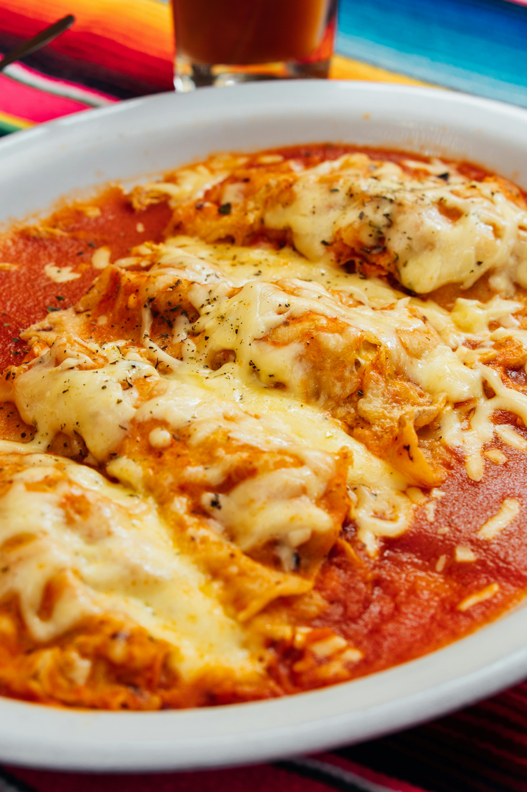

Enchiladas

Description
An enchilada is a Mexican dish consisting of a corn tortilla rolled around a filling and covered with a savory sauce. Enchiladas can be filled with various ingredients, including meats, cheese, beans, potatoes, vegetables, or combinations. Enchilada sauces include chili-based sauces, such as salsa roja, various moles, tomato-based sauces, such as salsa verde, or cheese-based sauces, such as chile con queso.
Ingredients
- 1 Tbsp olive oil
- 1 cup onion,finely chopped
- 2 cloves garlic, minced
- 2 cups shredded cooked chicken (rotisserie works well)
- 15 oz black beans, rinsed and drained
- 4 oz can diced green chiles, undrained
- 1 tsp chili powder
- 1 tsp ground cumin
- ½ tsp dried oregano
- ½ tsp salt
- 2 cups enchilada sauce
- 12 oz shredded cheese, Mexican blend
- 8 large flour tortillas
- Optional: fresh cilantro, chopped green or red onion, sour cream, avocado, pico de gallo
Steps
- Preheat oven to 350° F
- Heat the olive oil in a large skillet over medium heat. Add the onion and cook until it starts to soften, about 3 minutes. Add the garlic and cook, stirring, 30 seconds. Turn off the heat.
- Add the cooked chicken, black beans, diced green chiles, chili powder, cumin, dried oregano, salt and ½ cup of the enchilada sauce to the skillet. Stir until well combined.
- Grease a 9×13-inch baking dish and spread ½ cup of enchilada sauce over the bottom of the dish. To assemble each enchilada, take one of the tortillas and put ½ cup of the chicken and bean mixture down the middle of the tortilla, slightly to the side of the center. Top with ⅓ cup of cheese.
- Roll up the tortilla as tightly as you can. Put the enchilada, seam side down, in the prepared baking dish. Repeat with remaining tortillas, enchilada filling and cheese.
- Spread the remaining sauce over the tops of the enchiladas. Sprinkle on the remaining cheese.
- Bake enchiladas for 20-25 minutes (uncovered), until hot and bubbly. Let rest for 5 minutes and then serve, with toppings as desired.
Recipe credit: Kristine's Kitchen
Image credit: 8pCarlos Morocho
Home